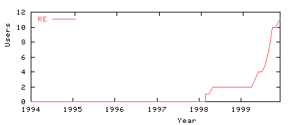
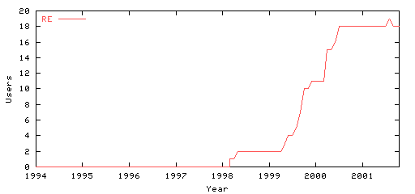
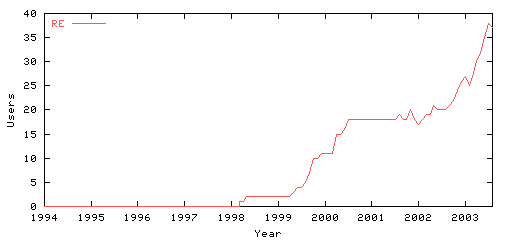

Dans les années 2000 les utilisateurs de Linux ont commencé à se compter pour montrer qu’ils étaient nombreux et qu'il ne fallait pas hésiter à changer de système d'exploitation. Parmi eux, il y en avait quelques-uns à la Réunion.
Puis ils sont devenus tellement nombreux que ça devenait difficile de les compter alors le site du compteur Linux a arrêté de les compter avant de fermer définitivement. En souvenir j'archive ici la liste de ces pioniers réunionnais des logiciels libres en 1999, 2001 et 2003.

Population: 0.679198 million
Linux users: 11
Linux density: 16.20 users/million
Reunion is no. 69 in the density statistics, with 16.20 users/Mpop
This file generated: Tue Oct 16 00:33:57 2001

Population: 0.7 million
Linux users: 18
Linux density: 25.71 users/million
Reunion is no. 79 in the density statistics, with 26.50 users/Mpop
Linux users in Reunion

| Place code: | RE |
|---|---|
| Maintainer(s): | Harald Tveit Alvestrand (for The World) |
| Population: | 0.731 million |
| Hostcount: | |
| Linux users: | 37 |
| Linux density: | 50.62 users/million |
Reunion is no. 60 in the density statistics, with 50.6156 users/Mpop
| Name | Users |
|---|---|
| Bras-Panon | 1 |
| Etang-Sale | 1 |
| La Possession | 1 |
| Le Tampon | 4 |
| Petite-Ile | 2 |
| Saint-Andre | 2 |
| Saint-Denis | 15 |
| Saint-Joseph | 1 |
| Saint-Paul | 3 |
| Saint-Pierre | 2 |
| Sainte-Anne | 1 |
| Sainte-Clotilde | 1 |
| Sainte-Suzanne | 1 |
| Lebon Jean-Claude | |
| Orion_ | http://www.orionwebsite.fr.st/ |